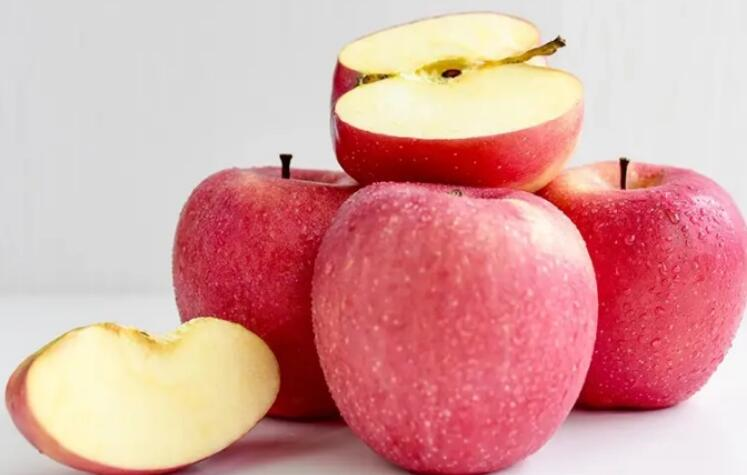

“一天一苹果，医生远离我”的说法是真的吗？吃苹果有什么禁忌？
导语：相信说到苹果，大家应该特别熟悉了，它是我们生活中最常见的水果，平时走进一家水果店时，很容易可以看到它的身影，与此同时，毫无疑问，经常吃苹果对我们的健康也是有好处的。
苹果是一种非常划算的水果，它不仅为人体补充营养，而且非常便宜，人们常说“一天一苹果，医生远离我”，那么，如果我们坚持每天吃苹果，它会对我们的身体产生什么影响？

“一天一苹果，医生远离我”的说法是真的吗？
答案是合理的，在各种水果中，苹果不愧为“销售冠军”，它价廉物美，体积大，适合全年消费，根据现代医学研究，苹果含有多种维生素和钾、钠、锌、碘等营养素，经常吃苹果可以起到健康作用，增强身体，预防和治疗疾病。
虽然苹果可以治愈所有疾病的传言有些夸张，但从营养的角度来看，经常吃苹果也有利于健康。
苹果富含维生素C，对人体非常有益，维生素C是人体内的主要抗氧化物质之一，在提高免疫力和预防呼吸道疾病方面发挥着重要作用，维生素C还可以增加血管组织的弹性，降低血液中胆固醇的含量，对动脉粥样硬化、冠心病、高血压等心脑血管疾病具有良好的防治作用。
锌是人体中多种多样酶的成份，是推动身体成长发育的主要原素，都是组成核酸和蛋白质的主要原素，核酸和蛋白质与我们的记忆息息相关，除此之外，锌还能够维持免疫能力，锌是DNA聚合酶的基本特征，缺钙可能造成免疫力细胞的增殖、胰腺活力和免疫力低下，容易受细菌攻击。
即便是减肥的女士，一天吃一个苹果也会帮助脂肪燃烧，苹果自身热量不太高，不必担心提升身体发热量的不良反应，此外含有丰富多样的化学物质，基础代谢率高，对瘦身减肥有促进作用。
当体内脂肪持续溶解到毛细血管中，残余的残渣会日益减少，尤其是苹果里的阿拉伯胶会被身体更快消化吸收运用，具备净化处理血管目地，预防引起心脑血管病，由此可见吃苹果真的对身体有益处，可是吃苹果也是有常见问题和食物禁忌，特别注意，吃错了可能给身体产生不必要的损失。
吃苹果有什么禁忌？
1、严重便秘的人不建议吃
严重便秘看上去轻微，可事实上经常便秘会引起肠胃压力，比较严重时也会提升肛肠病风险，针对大便困难的人而言，吃苹果最好是需要注意，苹果也含有水份，但纤维遇水后很有可能会澎涨阻塞，加剧肠道堵塞和严重便秘。
2、空腹不建议吃苹果
我的建议是早点起床，空腹的时候不要吃苹果，由于苹果含有单宁酸和葡萄糖，还含有一定量的阿拉伯胶，针对肠胃功能不好的小伙伴来说，空着肚子吃苹果也会导致胃酸过多，造成肠胃炎症、恶心想吐、恶心呕吐等一系列不良反应。
3、不要吃苹果核
澳洲科研人员发觉，苹果核含有少许有害物“氢氰酸”，很多氢氰酸附着在身体上，可引起头晕、头疼、呼吸加快等不适，明显的时候会造成晕厥，但是，也没必要太担心，苹果的氢氰酸关键存在果仁中，不存在果实中，需注意，吃苹果时习惯性咬苹果核，不容易迅速中毒，但长期这样吃真的对身体不太好。
4、不该和海鲜一起吃
苹果中有大量苹果酸，除苹果酸外也有丰富多样的钾，另一方面，鱼虾类食材一般含有大量矿物成份蛋白质，与碱性物质产生反映，矿物无法被吸收，此外，蛋白会沉积，那样也会降低营养元素，沉淀也会引起胃部不适，肚胀等，对健康危害非常大。
苹果削皮吃好还是不削皮吃好
一般来说，苹果尽量不要削皮，原因是苹果皮中有许多营养元素，有许多维生素和营养元素，可以促进身体营养的，因此苹果一般无需削皮，但是清理干净，防止农残，苹果对身体健康有利，适当吃有益于润肠，防止严重便秘。
吃苹果的最佳时间
1、早饭时
吃早饭时吃苹果，从晚饭前一天晚上到早饭前一天，一般人不吃东西的超过10小时，糖元类似没有了，早晨非常累，如果这时候空着肚子吃苹果，葡萄糖很快就变为葡萄糖水被吸收，大概30分钟，你会尽快恢复，假如空着肚子吃苹果，胆汁的分泌还会流动性，以免胆液在胆襄内过多沉积，避免胆囊结石。
2、睡觉之前一小时
睡前一钟头吃苹果，不但可以消除口腔细菌，改善肾功能，还促进睡眠，不容易失眠症，那如果临睡前觉得饿了，吃完苹果之后迅速睡觉会伤身。
3、饭前30分钟吃
餐前30分钟吃苹果；并且新鲜水果一般都是直接生吃的，因此饭前吃能保护人体免疫系统免遭熟菜的不当刺激性，对人体免疫系统有利，饭前吃水果还有一个好处，也可以瘦身，同量水果和其它食材对比，发热量比较低，因此饭前吃水果能让腹部有饱腹感，相对应降低别的食物热量摄取，对减肥人也有帮助。